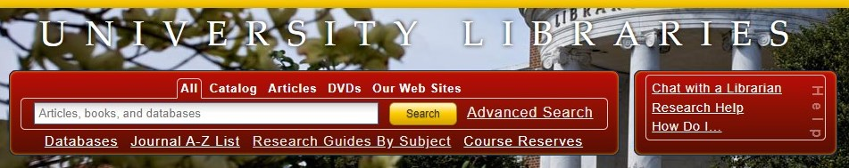
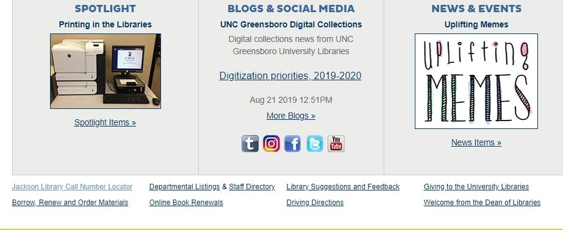

Introduction
The University of North Carolina Greensboro Library website at library.uncg.edu , aims to meet the student researcher’s immediate online needs, anticipate their room space and technological needs, and connect them to the library through social media to explore future wants or needs. The website completes these goals by having a large search box and research assistance section; having an online live knowledge of availability of rooms and technology and reservation capability; and having a detailed information section and an engaging news and social media section.
Research Assistance
The website centers upon the goal to assist the student researcher’s online needs through the search box and research assistance section. The search box appears central on the library page and presents an air of anticipating research needs. The search box anticipates the immediate need for students to search for resources for projects and papers. However, the rest of the info around the search box feels muddied as the links that are randomly below the search box seem unimportant, but in fact they are some of the most used and needed. I think using more tabs or making each link look like a button would make them stand out and allow students to easily find and use the resource they provide. The help box to the right of the search box connects the eye to the search box by having the same color and also points to meeting the researchers need by using the topics “Research help” and “How Do I…”. See picture below in reference to the usage of color to connect the help and search box sections.

Space and Technological Needs
Secondly, the website aims to anticipate a student’s space and technological needs through the center section below the search box. The live updates of available rooms and technology is incredibly impressive and helpful. It encourages usage of the available resources the library has to offer in its physical location. The website also allows online reservation for the rooms which encourages students to make use of the space for their academic needs.
Connecting to the Library
Lastly, the website seeks to connect students to the library and its resources through a social media and announcement section. The website has multiple detailed information sections about the library and the university. It has the following sections that complete this goal:
- A spotlight section
- A social media and blog section
- A news section

Conclusion
In conclusion the UNCG Library’s website has an overall purpose of meeting each student’s research needs through having easily accessible search capabilities and through presenting instruction and help sections also. These are centralized to be the main focus of the website. The website also highlights a student’s space and technological research needs and presents a live update on what is available at the physical library space. Lastly the library connects student to the library through social media and announcements to anticipate meeting future needs for the student. The website does each of these items well but with room for improvement on the organization of the random links throughout the home page.